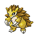

Назад
Сэндслэш
Сэндслэш — Покемон 1 поколения под номером 28 в Покедекс. Обитает он в регионе Канто и относится к Земляному типу. Это финальная стадия эволюции Покемона Сэндшрю. Тело Сэндслэша покрыто прочным шипами, которые представляют собой затвердевшие участки его шкуры. Раз в год старые шипы выпадают и заменяются новыми, которые вырастают из-под старых.
Тип:
Земляной
Эволюция

# 028 Сэндслэш
Финальная стадия